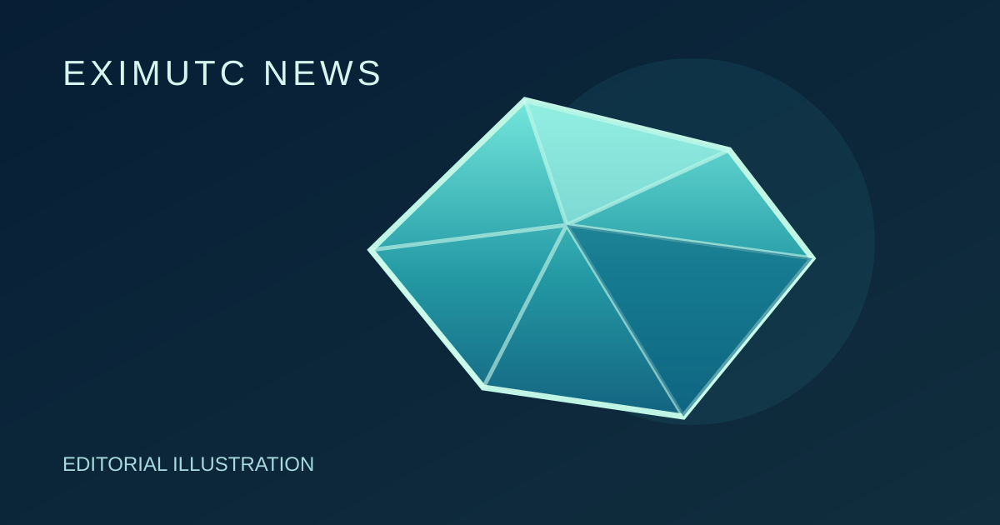

Jet: an ancient wood story in jewelry

GEMOLOGY FACT: Jet is a gem material of ancient woody origin, preserving a connection between the remains of trees and jewelry.
EXIMUTC Market View
EXIMUTC view: Material identity comes before a persuasive label. Ask for a documented material description before buying.
Source
gem-a.com: https://gem-a.com/gem-hub/fossils-decorative-materials-gemstones/